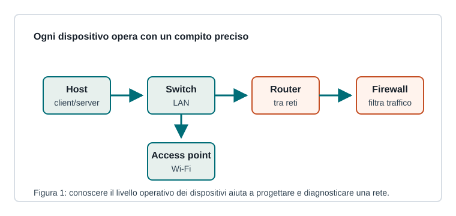

Capitoletto 3.1
Dispositivi di rete
Una rete non è fatta solo di cavi e indirizzi: ogni dispositivo svolge una funzione precisa in un determinato livello della comunicazione.

Host e scheda di rete
Un host è un dispositivo finale, come PC, server, stampante, smartphone o apparato IoT. Comunica tramite una scheda di rete cablata o wireless, identificata nel collegamento locale da un indirizzo MAC.
La scheda di rete trasforma i dati in segnali adatti al mezzo fisico e riceve frame dalla rete locale.
Hub, switch e router
| Dispositivo | Livello | Compito |
|---|---|---|
| Hub | fisico | ripete segnali su tutte le porte |
| Switch | collegamento | inoltra frame usando indirizzi MAC |
| Router | rete | inoltra pacchetti IP tra reti diverse |
Access point e reti wireless
L'access point collega dispositivi Wi-Fi alla rete locale. Gestisce l'accesso al mezzo radio, il nome della rete, la sicurezza e il collegamento verso la LAN cablata.
La posizione fisica, le interferenze e la scelta dei canali influenzano molto la qualità del segnale.
Firewall
Il firewall controlla il traffico in base a regole: può permettere, bloccare o registrare connessioni. Può essere un dispositivo dedicato, una funzione del router o un software sul server.
In un laboratorio scolastico il firewall può permettere la navigazione web, bloccare servizi non autorizzati e proteggere i server interni da accessi esterni.
Ripasso
Perché uno switch è più efficiente di un hub?
Perché inoltra i frame verso la porta corretta invece di ripetere tutto a tutti.
Quando serve un router?
Quando bisogna collegare reti IP diverse o uscire verso Internet.